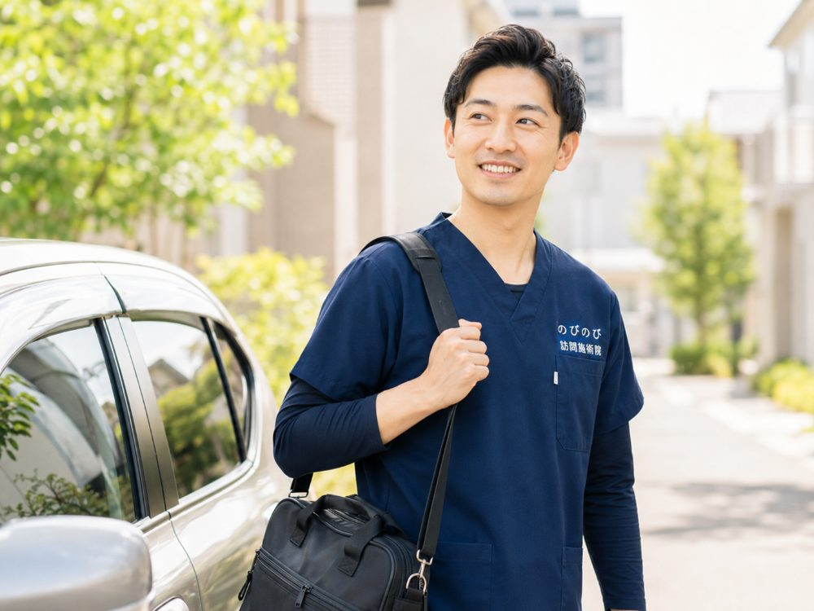

病院で「これ以上よくなりません」と告げられ、行き場をなくしたように感じている方はよくいらっしゃいます。治療が一区切りついたあとも、体のケアまで終わってしまうわけではありません。のびのび訪問施術院は、痛みやこわばりを和らげ、今ある力を保つお手伝いを、ご自宅や施設で続けています。劇的な回復をお約束はできませんが、あきらめたくないという気持ちに、静かに付き合っていきたいと考えています。
先に要点だけまとめます。病院で「これ以上大きくは変わりません」と言われても、体を動かし続けること自体には意味があります。訪問鍼灸マッサージは、痛みやこわばりを和らげ、今ある力を保つお手伝いをするものです。感じ方には個人差があり、失われた機能がすっかり元どおりになることをお約束はできません。それでも続けたい方の支えになれればと考えています。医師の同意にもとづく医療保険で、ご自宅や施設に伺います。費用は1回あたり総額3,950円、1割負担で約395円が目安です。ご本人やご家族のほか、ケアマネジャーや病院からのご相談も受けています。
「これ以上よくならない」の、本当の意味
「これ以上よくならない」という言葉は、多くの場合「急な回復は見込みにくい時期に入った」という意味合いで使われます。病気やけがそのものの治療が一区切りついたということであって、体のケアがすべて終わったという知らせではありません。
病院は、病気やけがを治すための場所です。治療が一段落すると、そのあとをどう過ごすかまでは、なかなか具体的に示されないことがあります。退院や通院終了のあとに、ふと行き場をなくしたように感じるのは、そのためかもしれません。
けれど、回復の勢いがゆるやかになったあとも、暮らしは続いていきます。今ある力をどう保つか、痛みとどうつきあっていくか。そこが日々の過ごしやすさを左右します。視点を『治す』から『保つ・やわらげる』へと少しずらしてみると、まだできることは残っています。のびのびがお手伝いしたいのは、その部分です。
体を動かし続けることに、それ自体の意味がある
体は、使わずにいると少しずつ固くなり、力も落ちていきます。寝て過ごす時間が長くなるほど、その傾向は出やすくなります。関節の動く範囲がせまくなったり、ちょっとした動作がおっくうになったりするのは、その積み重ねです。
その日の体に合わせて動かし続けると、こわばりがやわらぎ、動作が保たれやすくなります。肩や股関節が固まらないように動きを助ける、冷えやすい足を温めてめぐりを促す、痛みを和らげて夜の眠りにつなげる。ひとつひとつは地味な積み重ねですが、ご本人にとっては小さくない違いになります。
実際に、『夜のしびれが以前よりましになった』『足が温まって眠りやすくなった』『肩の動く範囲が保てている』『表情がやわらかくなった』といった声をいただくことがあります。ただ、体の状態は人それぞれで、感じ方にも個人差があります。同じように変化するとは限らない、ということも合わせてお伝えしておきます。
できること、できないこと（正直にお伝えします）
のびのびにできるのは、はり・きゅう・手技で痛みやこわばりを和らげ、動かす力を保つお手伝いをすることです。手技や機能訓練は、鍼灸に加える追加料金なしのケアとして、その日の状態に合わせて行います。
一方で、できないことも、はっきりお伝えしておきたいと思います。失われた機能がすっかり元どおりになることや、病気そのものを治すことは、お約束できません。体に負担のかかる無理な施術をしたり、過度な期待をあおったりすることもしません。
強い売り込みや勧誘もしません。受けるかどうか、続けるかどうかは、ご本人とご家族が決めることです。のびのびは、判断の材料になる正直な話を、そのままお伝えする役目だと考えています。
家で受けられるから、続けやすい
通院そのものがつらくなってきた方でも、ご自宅や施設で受けられます。移動の負担がないぶん、体調に波がある方でも続けやすいのが、在宅で受ける利点です。天候の悪い日や、体が重い日でも、予定を大きく崩さずに済みます。
寝たきりの状態でも、お布団やベッドの上で、体の向きに配慮しながら伺います。刺激の強さも、その日の体調に合わせて加減します。決まった内容を無理に通すのではなく、その日できることを、その日の体に合わせて選びます。
施術ごとの様子や変化は、ご家族と共有し、必要に応じて主治医やケアマネジャーにもお伝えします。離れて暮らすご家族にも、いまどんな状態なのかが届くようにしています。
ご家族の気持ちにも、少しゆとりを
つらい思いをしているのは、ご本人だけではありません。そばで支えるご家族も、日々気を張り続けています。先の見えない不安を、一人で抱えていることも少なくないはずです。
定期的に専門家が入ることで、見守りの負担がいくらか軽くなることがあります。体のことを相談できる相手が定期的に来る、というだけでも、肩の力が少し抜けるという声もあります。施術中の何気ない会話や、少し楽になったときの表情が、ご家族の支えになることも。
結果だけでなく、その時間をどう過ごすか。のびのびは、そこも含めてお手伝いできればと考えています。
まず何から？相談の流れと費用のこと
はじめの一歩は、お電話かフォームで、今の状態と困りごとをお聞かせいただくことです。ご本人やご家族はもちろん、担当のケアマネジャーや、病院の相談員からのご連絡でもかまいません。
医療保険で受けるには医師の同意が必要になりますが、同意書の用紙の準備や、依頼の仕方など、取得の手続きはのびのびが段取りします。手続きが分からず立ち止まってしまう、ということがないようにします。
費用は1回あたり総額3,950円、1割負担なら約395円が目安です。医療保険での施術は、介護保険の区分支給限度額とは別枠になります。デイサービスなどと重ねても、ご利用いただけます。出張費が別途かかることはありません。お支払いは月ごとにまとめ、明細をお渡しします。
あきらめる前に、一度話だけでも
「もう手立てはない」と感じていても、今の状態に合うケアが残っていることはあります。まずは話を聞かせていただくところから始めれば十分で、その場で何かを決めていただく必要はありません。
無理におすすめはしませんし、受けてみて合わないと感じれば、やめてもらってかまいません。訪問先は、大阪市（淀川・東淀川・都島・北・旭）や北摂、阪神間が中心です。ご自宅でも施設でも、寝たきりの方でも伺います。あきらめる前に、一度だけでも話を聞かせてください。
よくある質問
もう回復は望めないのに、受ける意味はありますか？
回復の勢いがゆるやかになったあとも、体を動かし続けることには意味があります。痛みやこわばりを和らげ、今ある力を保つお手伝いが中心です。劇的な変化をお約束はできませんが、日々の過ごしやすさにつながることがあります。感じ方には個人差があります。
寝たきりでも受けられますか？
受けられます。お布団やベッドの上で、体の向きに配慮しながら伺います。刺激の強さもその日の体調に合わせて加減しますので、体力に不安がある方でも、負担にならない程度に続けられます。
主治医に反対されないか心配です。
医療保険で受けるには医師の同意が必要です。同意書の準備や依頼の仕方は、のびのびがお手伝いします。施術の様子や変化は必要に応じて主治医にもお伝えし、連携しながら進めますので、まずはご相談ください。
どのくらいの頻度で受けるのですか？
状態やご希望に合わせて決めます。週に何回と一律に決まっているものではなく、体調や暮らしのリズムに体の様子を見ながら、相談しながら調整していきます。
費用はいくらかかりますか？
1回あたり総額3,950円、1割負担なら約395円が目安です。医療保険での施術は介護保険の区分支給限度額とは別枠で、出張費が別途かかることはありません。お支払いは月ごとにまとめ、明細をお渡しします。
本人以外が相談してもいいですか？
かまいません。ご家族のほか、ケアマネジャーや病院の相談員からのご連絡も受けています。ご本人の状態や困りごとをお聞かせいただければ、そこからお話を始めます。